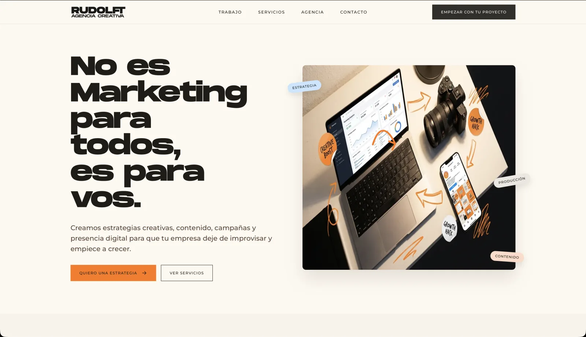

01 / Frontend
Rudolft
Landing Page Corporativa
Landing page desarrollada para una agencia creativa, enfocada en comunicar su identidad y servicios mediante una experiencia visual moderna y responsive.
Una web de marketing que intenta no parecer una web de marketing.
Ver proyecto ↗